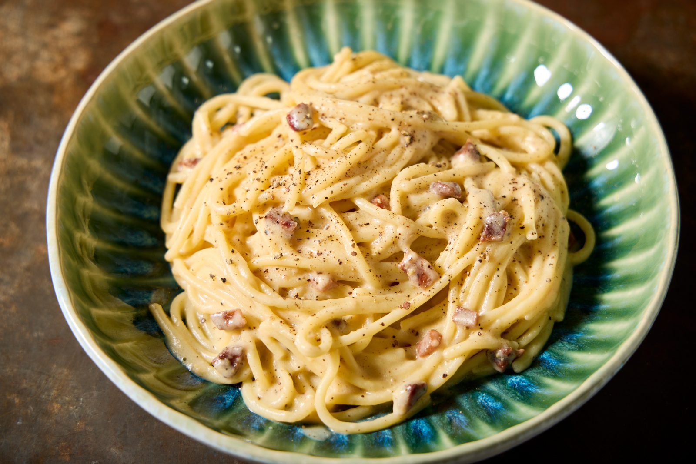

Carbonara

Description
Carbonara is a creamy Italian pasta dish made with eggs, cheese (usually Parmesan or Pecorino), pancetta or
bacon, and black pepper. It’s quick to prepare and famously contains no cream—just silky sauce made from
eggs and cheese stirred into hot pasta.
Ingredients
- 400g spaghetti
- 150g pancetta or bacon, diced
- 2 eggs
- 50g grated Parmesan cheese
- Salt and black pepper
Instructions
- Cook pasta – Boil spaghetti in salted water until al dente. Save 1 cup of pasta water, then drain.
- Cook pancetta – Fry pancetta or bacon in a pan until crispy.
- Mix eggs and cheese – In a bowl, beat the eggs and mix in the Parmesan. Add lots of black pepper.
- Combine – Add hot pasta to the pan with pancetta. Remove from heat. Quickly stir in the egg mixture, adding a bit of pasta water to make it creamy.
- Serve – Top with extra cheese and pepper. Enjoy!
Home